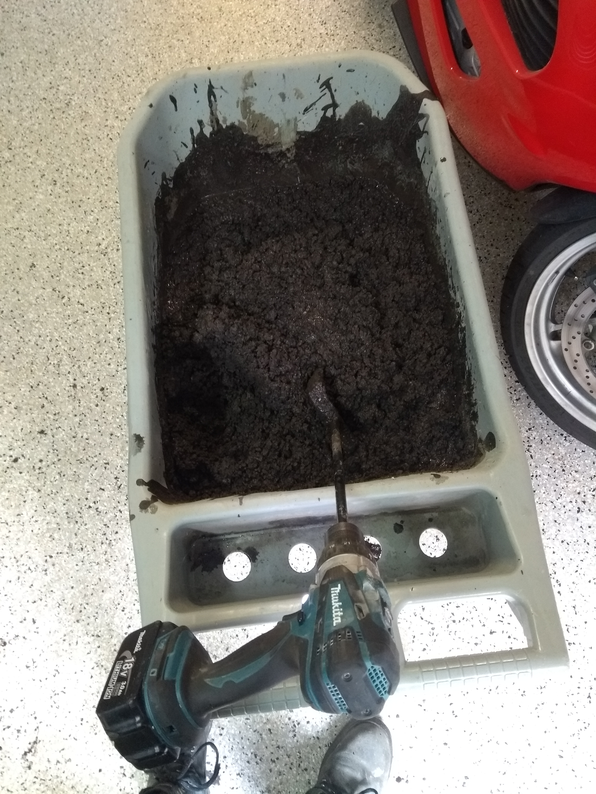
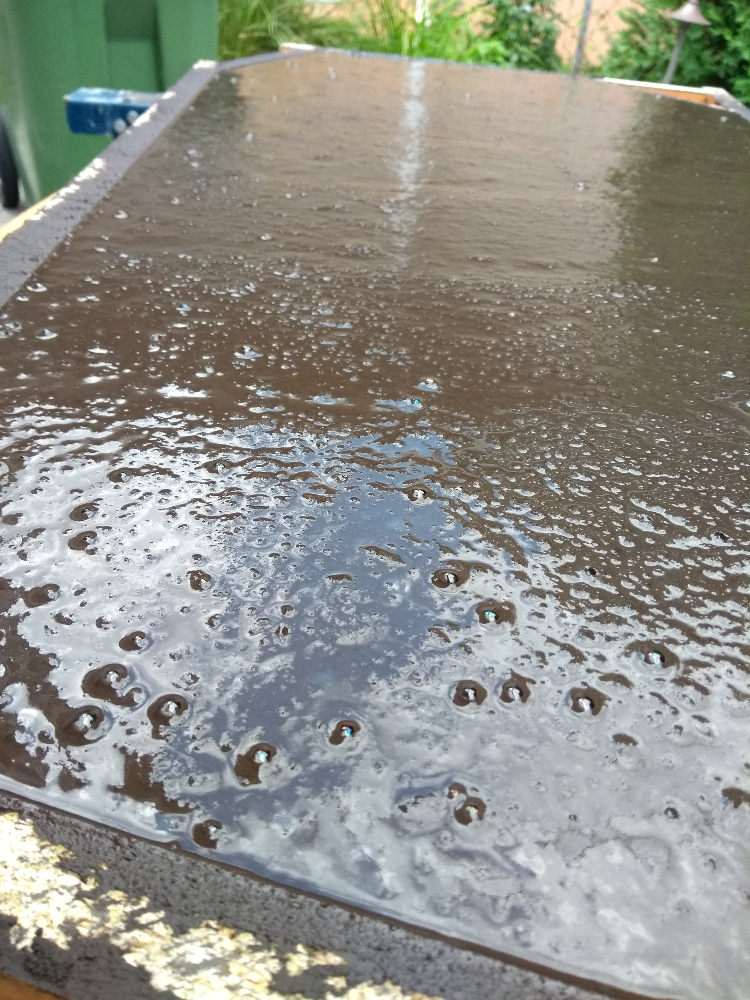
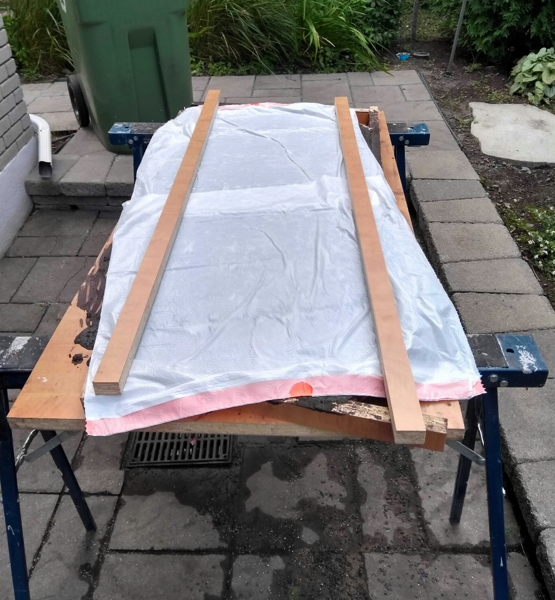
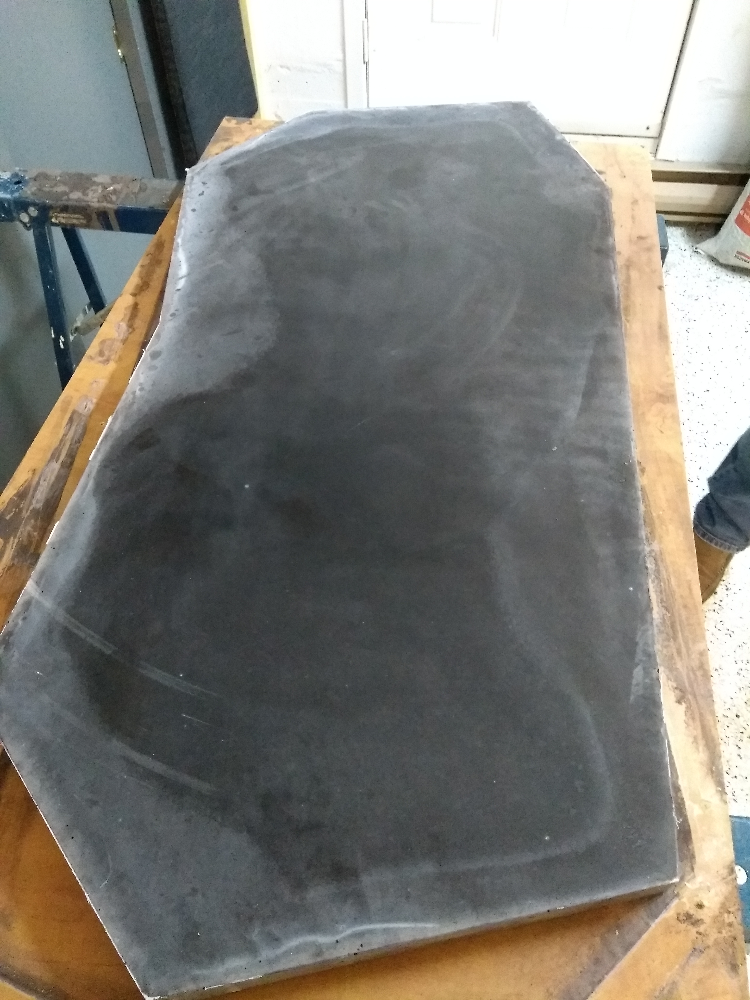
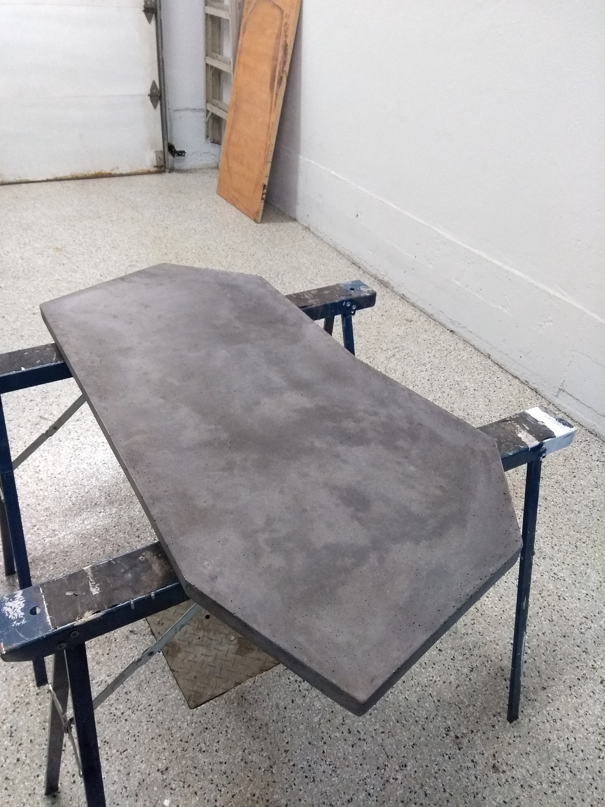
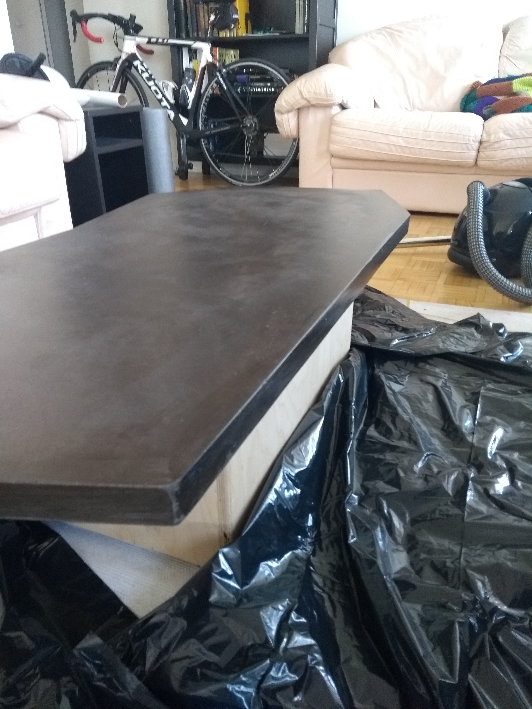

This post will go through the process of making a concrete coffee table. I had never worked with concrete before. This was a relatively simple introduction to concrete furniture.
The objective was to make a coffee table out of concrete, using recycled materials as much as possible. Moreover, since concrete is easily shaped, I wanted to make an asymmetric table (i.e. not a rectangle).
First, here’s the final result:
Here it is ‘installed’ (on a wooden box I had lying around):
Making the mould
Concrete tables are easiest to make using a reverse cast method. We made a mould from a smooth material, melamine boards, that my dad found in the trash at his job. I first brainstormed what shape I wanted, then drew the shape on the main board:
Other melamine boards were cut into strips of about 1.5 inches wide. These would later make the sides of the mould. Here is the partially-assembled mould:
Note that since the table is asymmetric, some of the joints between strips are at small angles. We used a Miter saw to cut the end of strips. Here is an example:
We also pre-drilled the holes with a wider drill bit so that screws would not protrude from the strips, like so:
This will make it easier to level the concrete later on, as the surface of the strips will be flat.
Here is the assembled mould:
Note that at this points, joints are not water tight; concrete would slowly leak out. Here’s an example joint:
We need to make the mould water-tight. Caulking was used for this purpose:
Here is the finished mould after cleaning:
Concrete mix
I used two 80 lbs (~36 kg) bags of concrete mix. The idea was to mix all the concrete, then separate it in two batches : one left as-is, and the other batch colored with charcoal pigments. Then, recombine the two halves, without mixing too much, to create a marbled look.
I mixed the concrete by hand(-held mixer) in this wheelbarrow:
Charcoal pigments mixed in water are waiting in a separate container:
Unfortunately I have no pictures showing the process before I recombined the two concrete halves. Here is the final mix. You can also see the tool I used to mix the concrete (handheld drill + concrete mixing attachment):

Note that while the mix seems uniform, I mixed the final concrete very little. At this point I thought I failed to do the marbling; as you will see, it actually worked. Also the mix looks brown; the color will change during hardening.
Moulding
Here is the filled mould:
I have no pictures of this, but we added some metal rebar to help with structural integrity.
We leveled the surface with another melamine strip. This is why we pre-drilled the holes, so that the entire mould + concrete assembly lays perfectly flat.
At this point, we needed to remove the air bubbles trapped in the concrete. This was done by hammering the underside of the mould with a rubber mallet for about an hour. Bubbles appeared at the surface like so:

To help the concrete harden more uniformly, I ‘sealed’ the mould using plastic bags:

Every few days, I would remove the plastic layer and spray water on the concrete surface.
Initial hardening
After a week, the concrete is hard enough to partially de-mould. Here is the hardened surface (which will end up being the bottom of the table):
At least this is confirmation that the table is not brown. We flipped the table to expose the top surface. It’s difficult to see on this image, but the surface looks like it might be marbled:

Polishing and Finish
After about two weeks, I polished the surface (200-grit) to reveal the marbling.
Before:
After:

Looking closely, we can see air bubbles:
Note that if I was making a kitchen counter, I would want to get rid of the holes in the surface (for sanitary reasons); in my case I thought it was not important. However, I still tried to fill in some of the larger holes using a more liquid concrete mix:
After 24h, I polished the surface and sides again, with a smaller grit (400-grit):
Finally, to protect the surface and make the marbling more visible, I coated the table with some wood varnish I found lying around at my parents’. I only have a picture of coating the underside of the table:
Transport from my parents’ garage to my apartment:
Final coat of varnish at home:

Closing comments
The final cost was about 85 $CAD dollars:
50 $CAD for two bags of concrete and metal reinforcements;
35 $CAD for iron oxide pigments (5kg);
free melamine picked up from trash;
free leftover varnish;
free man-hours over the course of a few months.